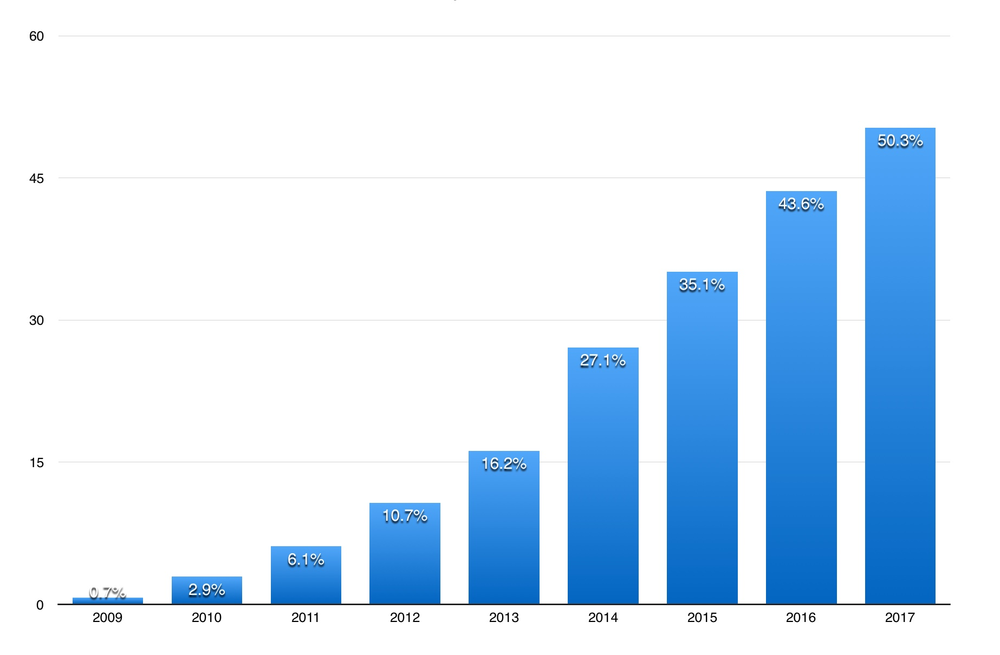
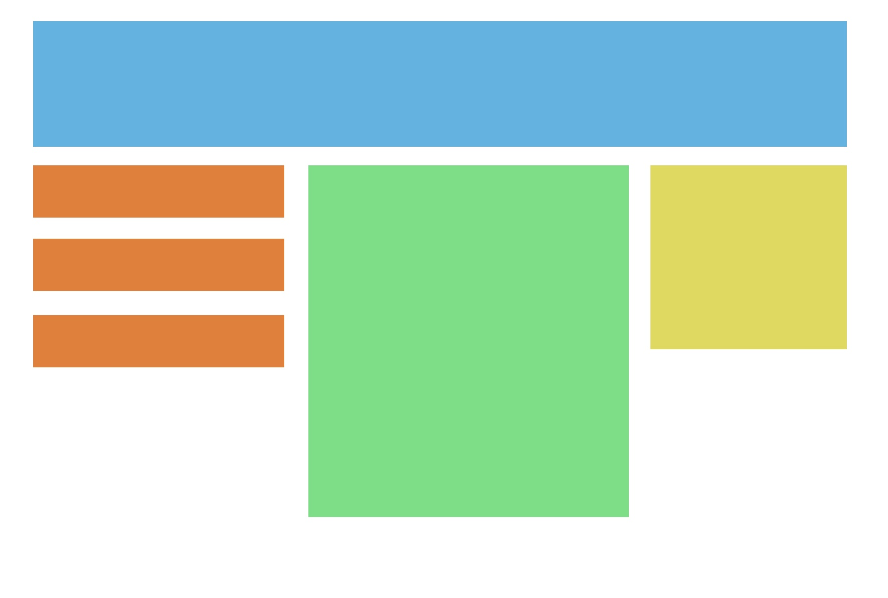
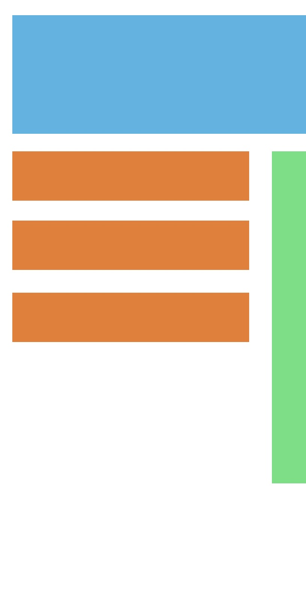

Learning how to correctly use responsive web design
What is it?
Responsive web design conceptually is how the display of a webpage conforms to appear on any screen or device. In application to a typical website, this means that images, paragraghs, and other elements shrink, move, or enlarge to fit what the screen size is. Not surprisingly, this particular web design characteristic wasn't a major issue until mobile devices such as smartphones and tablets became increasingly popular, as seen in the graph below: the viewing of any website data in general dramatically increased with the usage of mobile devices from 2009 to 2017.
{kind=link}
Percentage data source from statista.com
Obviously, making your website responsive to mobile devices is pretty important in our current era. Many older websites are full of responsive web design errors, lacking the proper development to conform it to become mobile-friendly. An easy example of this is a website with extremely small text that requires an amount of zoom to be actually legible. More commonly now, however, developers are taught to first make the website on mobile, and then adjust it to desktops or laptops.
As an example of how our new modern responsive web design works, here's a page made on an average desktop.
{kind=link}
Without the proper use of responsive web design, this is its appearance on mobile.
{kind=link}
As you can see, the initial appearance is cut off, and the user has to scroll horizontaly over to see the entire page. This format looks unprofessional and is inefficient, leaving a messy website display and an unhappy user. Now let's take a look at a well-designed, responsive page on mobile.
{kind=link}
Now it's one continuous page scrolling down, making it much easier to read the information and giving a pleasing display to the viewer.
Code Demo
Here's a simple code demonstration for you to try out.
<!DOCTYPE html>
<html lang="en-us">
<head>
<meta name="viewport" content="width=device-width, initial-scale=1.0">
<style>
.box {
float: left;
margin: 5px;
padding: 15px;
max-width: 300px;
height: 300px;
border: 1px solid black;
}
</style>
</head>
<body>
<h1>Responsive Web Design Example</h1>
<h2>Try resizing your browser window</h2>
<div class="box">
<h2>Red</h2>
<p>Red is a prime color. Did you know that?</p>
<p>Red can be found in apples, autumn leaves, and cardinals.</p>
</div>
<div class="box">
<h2>Yellow</h2>
<p>Yellow is another prime color.</p>
<p>Yellow can be found daisies, lemons, and sunsets.</p>
</div>
<div class="box">
<h2>Blue</h2>
<p>Blue is the last prime color.</p>
<p>Blue can be found in the ocean, the sky, and robin eggs. </p>
</div>
<div class="box">
<h2>Green</h2>
<p>Green is not a prime color.</p>
<p>Green can be made by mixing blue and yellow together.</p>
</div>
</body>
</html>
As you can see, all the work is done by the CSS. The first rule is float: left;. This interprets as pushing each box at all times as far to the left as possible. We then add a margin: 5px; to give it a border around the webpage edge. Since we want to target the margins around each side of the element, no further specification is needed and it will add a 5 pixel margin all around the element. This applies to the padding as well. The next two lines simply set a basis for how big the box should be. Finally, the last line of code adds a thin border around the boxes to complete the look.
Difficulty: Intermediate
March 15th, 2017
Editor: Kellan Gash
Creative Director: Luke Holsinger